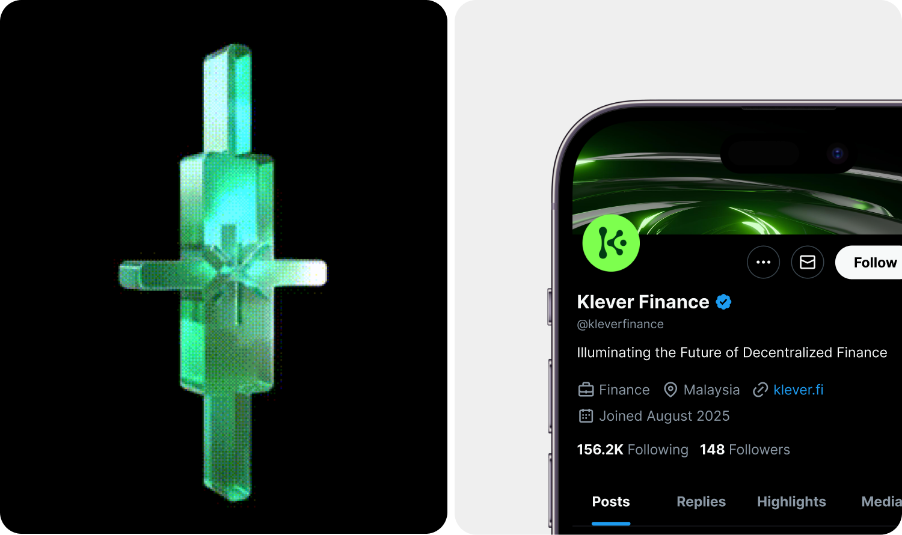

Klever finance
The One-Stop DeFi Hub to Earn sustainable yield and unlock LP Lending potential.

Challenge
The client needs a logo for the Klever project, with the core requirement of being highly recognizable, memorable, and suitable for use as a token logo within a Web3 ecosystem. The primary color direction is green, representing growth, positivity, and sustainability in the financial–technology space.
From a conceptual standpoint, two main visual directions were proposed: (1) A logo inspired by candlesticks or flames, directly referencing financial candlestick charts and symbolizing market movement, energy, and momentum; (2) A logo based on the oak tree, a symbol of long-term growth, strength, and upward development.
Regardless of the chosen direction, the logo must convey a strong technological and Web3-oriented identity, while remaining clean, modern, and easy to recognize across digital platforms, ensuring its effectiveness as a token identity.
Project
Timeline
A Tough Beginning...
After reviewing the project, we conducted in-depth research and created numerous hand-drawn sketches on paper, exploring multiple variations with different concepts.


and many other sketches
From Deadlock to Clarity
After many discussions and explorations, we ultimately aligned on a final concept that blends fluidity with a futuristic direction.

When complex, layered ideas no longer felt appropriate, we returned to the original simple concept. This time, we focused on stylizing the letter "K" from Klever's name — enhancing brand recognition while clearly expressing the liquid concept we developed, and allowing for smooth and flexible motion implementation.

Typography 1
ChaChakra Petch
Typography 2
Geist




LET'S BUILD YOUR VISION
WORK WITH US →A creative-first design service studio based out of hcm, Vietnam
Specialising in branding, web/ app design.